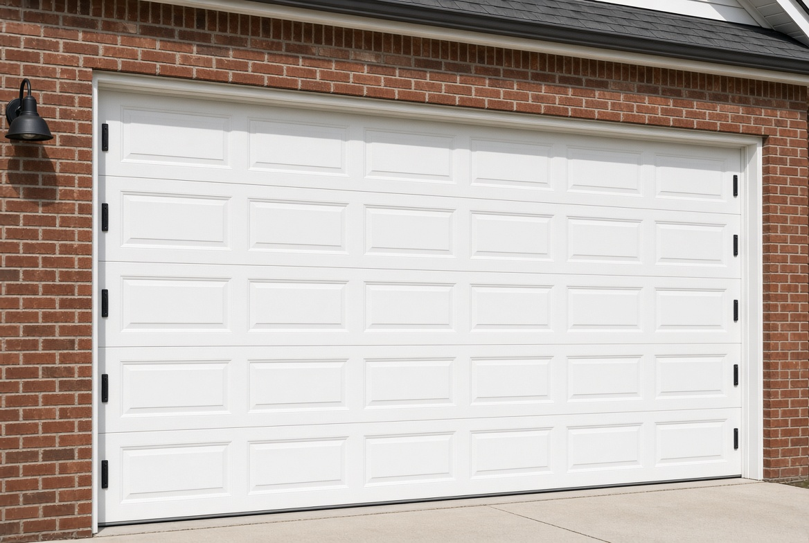
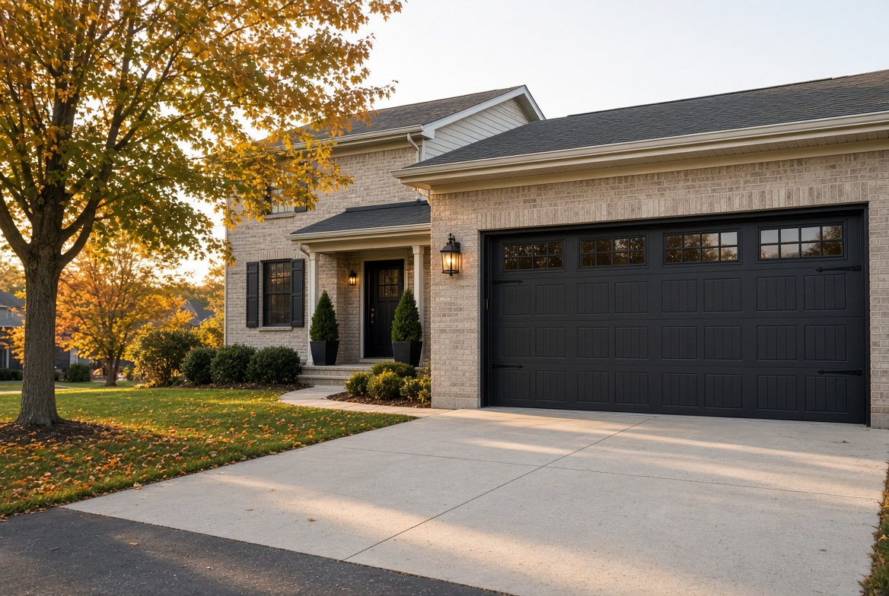
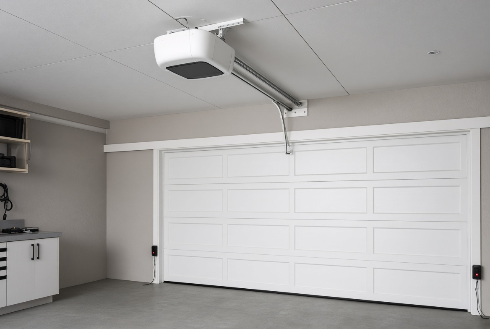
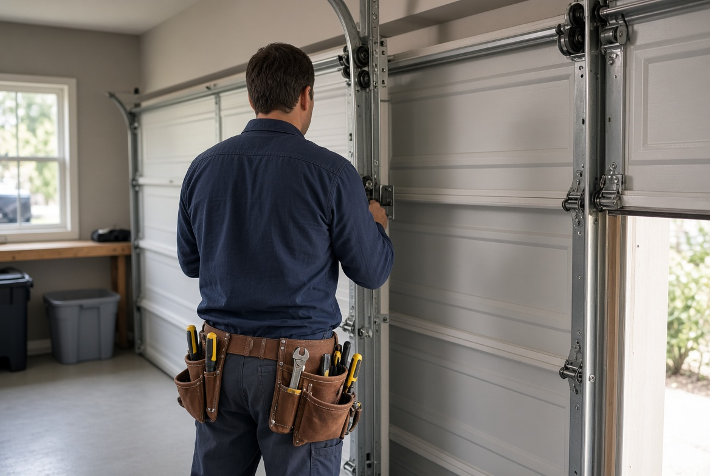

New garage doors
Insulated steel, carriage-house, and modern glass doors sized to the opening. We remove the old door and balance the new one.
Compare stylesMac Doors LLC is an authorized Haas dealer. Jason McDonald measures and installs Haas garage doors for homes in Columbus and surrounding areas, and he repairs springs, cables, and openers.


Insulated steel, carriage-house, and modern glass doors sized to the opening. We remove the old door and balance the new one.
Compare styles
A snapped spring is the usual reason a door feels twice as heavy. We replace both springs as a pair and reset the cables.
Repair details
Belt-drive and wall-mount openers, remotes, and photo-eye alignment so the door reverses the way it should.
Opener service
A garage door is a counterbalanced system. If the springs are the wrong size, the opener does the lifting and burns out. Mac Doors sizes the spring to the door weight, sets the tracks plumb, and tests the balance with the opener disconnected.
Width, height, headroom, and sideroom decide which door and opener will actually fit.
Ohio winters reward a polyurethane-insulated door. Style is matched to the front of the house, not a catalog default.
Old door out, new door in, safety reverse checked, and the work area swept.
Jason McDonald serves Columbus and surrounding areas. Call (937) 408-2497 for an estimate.
Door or repair price, haul-away, opener if needed, and the day we can be there. No “we’ll know when we get there” on a standard opening.
Get the quoteThe estimate is free for a standard residential visit in the service area. Jason answers (937) 408-2497 for emergencies.
No. Springs are a matched pair. Replacing one leaves the other ready to fail and the door unbalanced.
A standard single or double door is usually a one-day install once the door is in stock. Custom sizes and special colors take longer to arrive.